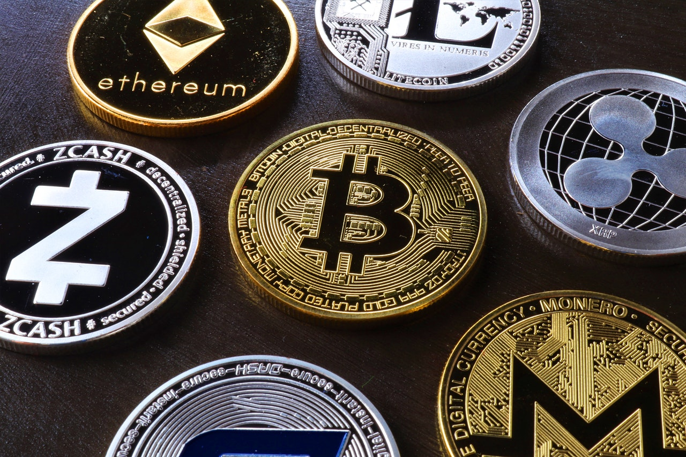
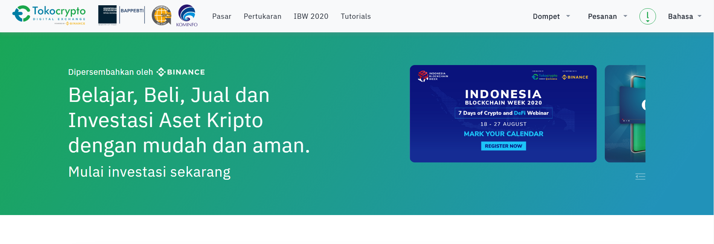
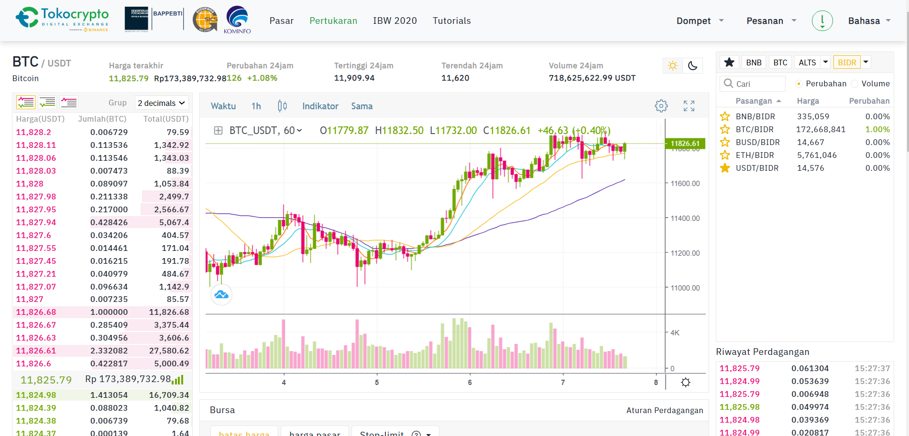
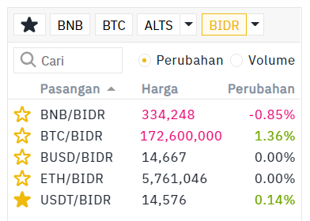
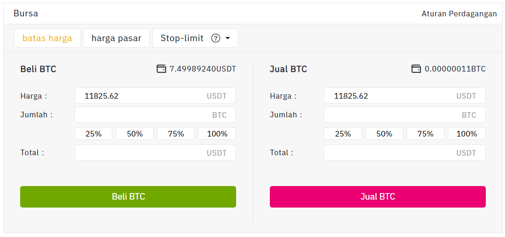
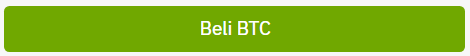
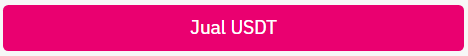

Pengertian
Cryptocurrency atau dikenal dengan crypto adalah mata uang digital yang dapat digunakan untuk membeli barang dan jasa. Ini adalah bentuk pembayaran yang dapat ditukar dengan barang dan jasa secara daring atau untuk mendapatkan keuntungan.
Crypto dapat digunakan sebagai mata uang normal, seperti Dolar Amerika Serikat atau mata uang lainnya. Tetapi, terdapat perbedaan besar karena mata uang crypto saat ini belum diatur atau teregulasi oleh bank manapun, termasuk Bank Indonesia sebagai bank sentral nasional.
Menurut Surat Menko Perekonomian Nomor S-302/M.EKON/09/2018, aset crypto tetap dilarang sebagai alat pembayaran. Namun, dapat digunakan sebagai alat investasi untuk dimasukan sebagai komoditi yang dapat diperdagangkan di bursa berjangka. Perdagangan crypto di Indonesia disetujui dan diawasi oleh Badan Pengawas Perdagangan Berjangka Komoditi (Bappebti).
Contoh

Aset Crypto terus mengalami perkembangan pesat. Tiap tahunnya, terus bermunculan aset Crypto baru yang bisa dijadikan lahan investasi, baik untuk investasi jangka panjang, maupun jangka pendek. Diantara banyaknya aset Crypto, berikut adalah contoh aset crypto populer beserta harganya :
| Nama |
Harga |
| Bitcoin |
Rp 568.914.273,- |
| Ethereum |
Rp 42.291.036,- |
| BNB |
Rp 5.752.738,- |
| SOL |
Rp 1.523.678,- |
| SAND |
Rp 40.370,- |
| XRP |
Rp 10.310,- |
| TRX |
Rp 926,- |
Mekanisme
Bagaimana? Apakah kamu tertarik untuk mendalami cryptocurrency? Jika iya, maka berikut penulis bagikan mekanisme Buy/Pembelian dan Sell/Penjualan aset crypto pada salah satu platform crypto resmi Indonesia, yaitu Tokocrypto.
Jangan khawatir, karena Buy dan Sell cukup mudah dipahami bahkan bagi pemula.
Beli Asset
1. Masuk ke akun Tokocrypto, lalu pilih Pertukaran


2. Untuk melihat jenis crypto, bisa dilihat di menu berikut.

3. Masukkan jumlah yang ingin kamu Beli

4. Klik tombol Beli yang berwarna hijau.

5. Tunggu sampai notifikasi Sukses muncul dan pesananmu masuk ke Order Book
6. Asset bisa di check di menu Dompet
Jual Asset
1. Masuk ke akun Tokocrypto, lalu pilih Pertukaran
2. Untuk melihat jenis crypto, bisa dilihat di menu berikut.
3. Masukkan jumlah yang ingin kamu Jual
4. Klik tombol Jual yang berwarna merah.

5. Tunggu sampai notifikasi Sukses muncul dan pesananmu masuk ke Order Book
6. Jika pesananmu di Order Book sudah selesai, check asset yang kamu jual di menu Dompet